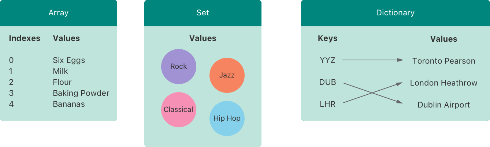
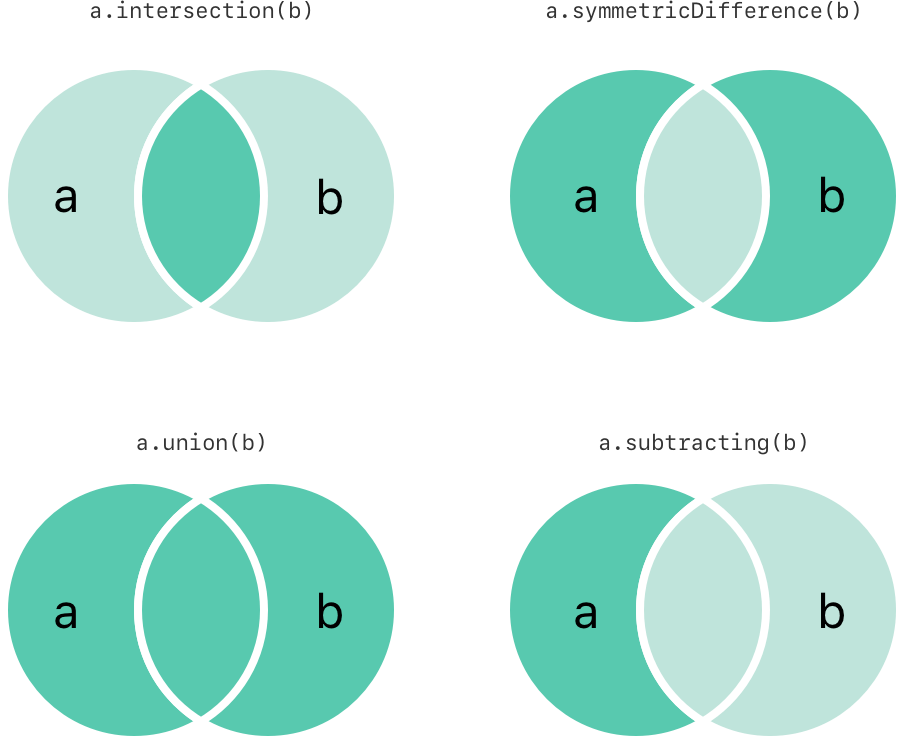
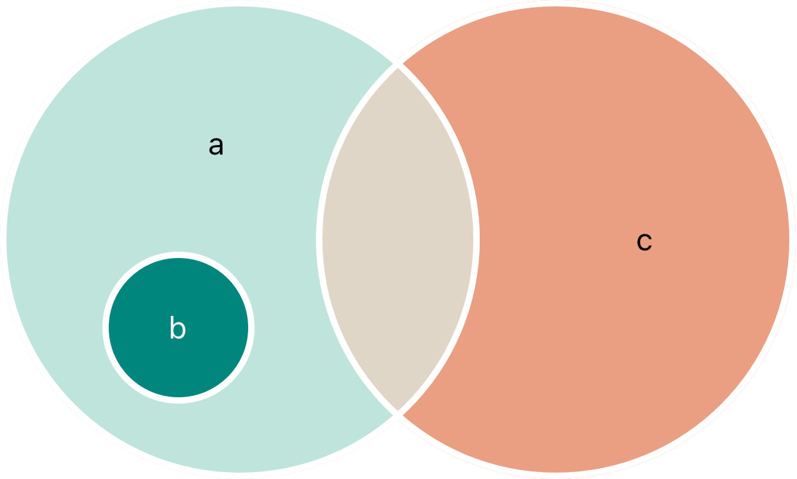

Swift 语言提供数组（Array）、集合（Set）和字典（Dictionary）三种基本的集合类型用来存储集合数据。数组是有序数据的集。集合是无序无重复数据的集。字典是无序的键值对的集。

Swift 中的数组、集合和字典必须明确其中保存的键和值类型，这样就可以避免插入一个错误数据类型的值。同理，对于获取到的值你也可以放心，其数据类型是确定的。
注意
Swift 的数组、集合和字典类型被实现为泛型集合。更多关于泛型类型和集合，参见 泛型 章节。
如果创建一个数组、集合或字典并且把它分配成一个变量，这个集合将会是可变的。这意味着可以在创建之后添加、修改或者删除数据项。如果把数组、集合或字典分配成常量，那么它就是不可变的，它的大小和内容都不能被改变。
注意
在不需要改变集合的时候创建不可变集合是很好的实践。这样做便于你理解自己的代码，也能让 Swift 编译器优化集合的性能。
数组使用有序列表存储同一类型的多个值。相同的值可以多次出现在一个数组的不同位置中。
注意
Swift 的
Array类型被桥接到 Foundation 中的NSArray类。更多关于在 Foundation 和 Cocoa 中使用
Array的信息，参见 Bridging Between Array and NSArray。
Swift 中数组的完整写法为 Array<Element>，其中 Element 是这个数组中唯一允许存在的数据类型。也可以使用像 [Element] 这样的简单语法。尽管两种形式在功能上是一样的，但是推荐较短的那种，而且在本文中都会使用这种形式来使用数组。
你可以使用构造语法来创建一个由特定数据类型构成的空数组：
var someInts: [Int] = []print("someInts is of type [Int] with \(someInts.count) items.")// 打印“someInts is of type [Int] with 0 items.”注意，通过构造函数的类型，someInts 的值类型被推断为 [Int]。
或者，如果代码上下文中已经提供了类型信息，例如一个函数参数或者一个已经定义好类型的常量或者变量，你可以使用空数组语句创建一个空数组，它的写法很简单：[]（一对空方括号）：
xxxxxxxxxxsomeInts.append(3)// someInts 现在包含一个 Int 值someInts = []// someInts 现在是空数组，但是仍然是 [Int] 类型的。Swift 中的 Array 类型还提供一个可以创建特定大小并且所有数据都被默认的构造方法。可以把准备加入新数组的数据项数量（count）和适当类型的初始值（repeating）传入数组构造函数：
xxxxxxxxxxvar threeDoubles = Array(repeating: 0.0, count: 3)// threeDoubles 是一种 [Double] 数组，等价于 [0.0, 0.0, 0.0]你可以使用加法操作符（+）来组合两个已存在的相同类型数组。新数组的数据类型会从两个数组的数据类型中推断出来：
xvar anotherThreeDoubles = Array(repeating: 2.5, count: 3)// anotherThreeDoubles 被推断为 [Double]，等价于 [2.5, 2.5, 2.5]
var sixDoubles = threeDoubles + anotherThreeDoubles// sixDoubles 被推断为 [Double]，等价于 [0.0, 0.0, 0.0, 2.5, 2.5, 2.5]你可以使用数组字面量来进行数组构造，这是一种用一个或者多个数值构造数组的简单方法。数组字面量是一系列由逗号分割并由方括号包含的数值：
[value 1, value 2, value 3]。
下面这个例子创建了一个叫做 shoppingList 并且存储 String 的数组：
xxxxxxxxxxvar shoppingList: [String] = ["Eggs", "Milk"]// shoppingList 已经被构造并且拥有两个初始项。shoppingList 变量被声明为“字符串值类型的数组“，记作 [String]。因为这个数组被规定只有 String 一种数据结构，所以只有 String 类型可以在其中被存取。在这里，shoppingList 数组由两个 String 值（"Eggs" 和 "Milk"）构造，并且由数组字面量定义。
注意
shoppingList数组被声明为变量（var关键字创建）而不是常量（let创建）是因为之后会有更多的数据项被插入其中。
在这个例子中，字面量仅仅包含两个 String 值。匹配了该数组的声明（只能包含 String 的数组），所以可以将这个字面量的赋值过程看作用两个初始项来构造 shoppingList 的一种方式。
由于 Swift 的类型推断机制，当你用字面量构造拥有相同类型值数组的时候，不必把数组的类型定义清楚。shoppingList 的构造也可以这样写：
xxxxxxxxxxvar shoppingList = ["Eggs", "Milk"]因为所有数组字面量中的值都是相同的类型，Swift 可以推断出 [String] 是 shoppingList 中变量的正确类型。
你可以通过数组的方法和属性来访问和修改数组，或者使用下标语法。
可以使用数组的只读属性 count 来获取数组中的数据项数量：
xxxxxxxxxxprint("The shopping list contains \(shoppingList.count) items.")// 输出“The shopping list contains 2 items.”（这个数组有2个项）使用布尔属性 isEmpty 作为一个缩写形式去检查 count 属性是否为 0：
xxxxxxxxxxif shoppingList.isEmpty { print("The shopping list is empty.")} else { print("The shopping list is not empty.")}// 打印“The shopping list is not empty.”（shoppinglist 不是空的）也可以使用 append(_:) 方法在数组后面添加新的数据项：
xxxxxxxxxxshoppingList.append("Flour")// shoppingList 现在有3个数据项，似乎有人在摊煎饼除此之外，也可以使用加法赋值运算符（+=）直接将另一个相同类型数组中的数据添加到该数组后面：
xxxxxxxxxxshoppingList += ["Baking Powder"]// shoppingList 现在有四项了shoppingList += ["Chocolate Spread", "Cheese", "Butter"]// shoppingList 现在有七项了可以直接使用下标语法来获取数组中的数据项，把所需要数据项的索引值直接放在数组名称之后的方括号中：
xxxxxxxxxxvar firstItem = shoppingList[0]// 第一项是“Eggs”注意
第一项在数组中的索引值是
0而不是1。 Swift 中的数组索引总是从零开始。
你也可以用下标来改变某个有效索引值对应的数据值：
xxxxxxxxxxshoppingList[0] = "Six eggs"// 其中的第一项现在是“Six eggs”而不是“Eggs”当你使用下标语法，所使用的下标必须是有效的。例如，试图通过 shoppingList[shoppingList.count] = "Salt" 在数组的最后添加一项，将产生一个运行时错误。
还可以利用下标来一次改变一系列数据值，即使新数据和原有数据的数量是不一样的。下面的例子把 "Chocolate Spread"、"Cheese" 和 "Butter" 替换为 "Bananas" 和 "Apples"：
xxxxxxxxxxshoppingList[4...6] = ["Bananas", "Apples"]// shoppingList 现在有6项通过调用数组的 insert(_:at:) 方法在某个指定索引值之前添加数据项：
xxxxxxxxxxshoppingList.insert("Maple Syrup", at: 0)// shoppingList 现在有7项// 现在是这个列表中的第一项是“Maple Syrup”这次 insert(_:at:) 方法调用把值为 "Maple Syrup" 的新数据项插入列表的最开始位置，并且使用 0 作为索引值。
类似的可以使用 remove(at:) 方法来移除数组中的某一项。这个方法把数组在特定索引值中存储的数据项移除并且返回这个被移除的数据项（不需要的时候就可以无视它）：
xxxxxxxxxxlet mapleSyrup = shoppingList.remove(at: 0)// 索引值为0的数据项被移除// shoppingList 现在只有6项，而且不包括 Maple Syrup// mapleSyrup 常量的值等于被移除数据项“Maple Syrup”注意
如果你试图通过越界索引来执行访问或者修改数据的操作，会引发一个运行时错误。此时可以使用索引值和数组的
count属性进行比较来在使用该索引之前检验其是否有效。除了当count等于 0 时（说明这是个空数组），最大索引值一直是count - 1，因为数组都是零起索引。
数据项被移除后数组中的空出项会被自动填补，所以现在索引值为 0 的数据项的值再次等于 "Six eggs"：
xxxxxxxxxxfirstItem = shoppingList[0]// firstItem 现在等于“Six eggs”如果你只想把数组中的最后一项移除，可以使用 removeLast() 方法而不是 remove(at:) 方法来避免需要获取数组的 count 属性。就像后者一样，前者也会返回被移除的数据项：
xxxxxxxxxxlet apples = shoppingList.removeLast()// 数组的最后一项被移除了// shoppingList 现在只有5项，不包括 Apples// apples 常量的值现在等于字符串“Apples”你可以使用 for-in 循环来遍历数组中所有的数据项：
xxxxxxxxxxfor item in shoppingList { print(item)}// Six eggs// Milk// Flour// Baking Powder// Bananas如果同时需要每个数据项的值和索引值，可以使用 enumerated() 方法来进行数组遍历。enumerated() 返回一个由索引值和数据值组成的元组数组。索引值从零开始，并且每次增加一；如果枚举一整个数组，索引值将会和数据值一一匹配。你可以把这个元组分解成临时常量或者变量来进行遍历：
xxxxxxxxxxfor (index, value) in shoppingList.enumerated() { print("Item \(String(index + 1)): \(value)")}// Item 1: Six eggs// Item 2: Milk// Item 3: Flour// Item 4: Baking Powder// Item 5: Bananas更多关于 for-in 循环的介绍请参见 For 循环。
集合用来存储相同类型并且没有确定顺序的值。当集合元素顺序不重要时或者希望确保每个元素只出现一次时可以使用集合而不是数组。
注意 Swift 的
Set类型被桥接到 Foundation 中的NSSet类。关于使用 Foundation 和 Cocoa 中
Set的知识，参见 Bridging Between Set and NSSet
一个类型为了存储在集合中，该类型必须是可哈希化的——也就是说，该类型必须提供一个方法来计算它的哈希值。一个哈希值是 Int 类型的，相等的对象哈希值必须相同，比如 a == b,因此必须 a.hashValue == b.hashValue。
Swift 的所有基本类型（比如 String、Int、Double 和 Bool）默认都是可哈希化的，可以作为集合值的类型或者字典键的类型。没有关联值的枚举成员值（在 枚举 有讲述）默认也是可哈希化的。
注意
你可以使用自定义的类型作为集合值的类型或者是字典键的类型，但需要使自定义类型遵循 Swift 标准库中的
Hashable协议。遵循Hashable协议的类型需要提供一个类型为Int的可读属性hashValue。由类型的hashValue属性返回的值不需要在同一程序的不同执行周期或者不同程序之间保持相同。因为
Hashable协议遵循Equatable协议，所以遵循该协议的类型也必须提供一个“是否相等”运算符（==）的实现。这个Equatable协议要求任何遵循==实现的实例间都是一种相等的关系。也就是说，对于a,b,c三个值来说，==的实现必须满足下面三种情况：
a == a(自反性)a == b意味着b == a(对称性)a == b && b == c意味着a == c(传递性)关于遵循协议的更多信息，请看 协议。
Swift 中的集合类型被写为 Set<Element>，这里的 Element 表示集合中允许存储的类型。和数组不同的是，集合没有等价的简化形式。
你可以通过构造器语法创建一个特定类型的空集合：
xxxxxxxxxxvar letters = Set<Character>()print("letters is of type Set<Character> with \(letters.count) items.")// 打印“letters is of type Set<Character> with 0 items.”注意
通过构造器，这里
letters变量的类型被推断为Set<Character>。
此外，如果上下文提供了类型信息，比如作为函数的参数或者已知类型的变量或常量，你可以通过一个空的数组字面量创建一个空的集合：
xxxxxxxxxxletters.insert("a")// letters 现在含有1个 Character 类型的值letters = []// letters 现在是一个空的 Set，但是它依然是 Set<Character> 类型你可以使用数组字面量来构造集合，相当于一种简化的形式将一个或者多个值作为集合元素。
下面的例子创建一个称之为 favoriteGenres 的集合来存储 String 类型的值：
xxxxxxxxxxvar favoriteGenres: Set<String> = ["Rock", "Classical", "Hip hop"]// favoriteGenres 被构造成含有三个初始值的集合这个 favoriteGenres 变量被声明为“一个 String 值的集合”，写为 Set<String>。由于这个特定集合指定了值为 String 类型，所以它只允许存储 String 类型值。这里的 favoriteGenres 变量有三个 String 类型的初始值（"Rock"，"Classical" 和 "Hip hop"），以数组字面量的形式书写。
注意
favoriteGenres被声明为一个变量（拥有var标示符）而不是一个常量（拥有let标示符）,因为它里面的元素将会在之后的例子中被增加或者移除。
一个集合类型不能从数组字面量中被直接推断出来，因此 Set 类型必须显式声明。然而，由于 Swift 的类型推断功能，如果你想使用一个数组字面量构造一个集合并且与该数组字面量中的所有元素类型相同，那么无须写出集合的具体类型。favoriteGenres 的构造形式可以采用简化的方式代替：
xxxxxxxxxxvar favoriteGenres: Set = ["Rock", "Classical", "Hip hop"]由于数组字面量中的所有元素类型相同，Swift 可以推断出 Set<String> 作为 favoriteGenres 变量的正确类型。
你可以通过集合的属性和方法来对其进行访问和修改。
为了获取一个集合中元素的数量，可以使用其只读属性 count：
xxxxxxxxxxprint("I have \(favoriteGenres.count) favorite music genres.")// 打印“I have 3 favorite music genres.”使用布尔属性 isEmpty 作为一个缩写形式去检查 count 属性是否为 0：
xxxxxxxxxxif favoriteGenres.isEmpty { print("As far as music goes, I'm not picky.")} else { print("I have particular music preferences.")}// 打印“I have particular music preferences.”你可以通过调用集合的 insert(_:) 方法来添加一个新元素：
xxxxxxxxxxfavoriteGenres.insert("Jazz")// favoriteGenres 现在包含4个元素你可以通过调用集合的 remove(_:) 方法去删除一个元素，如果它是该集合的一个元素则删除它并且返回它的值，若该集合不包含它，则返回 nil。另外，集合可以通过 removeAll() 方法删除所有元素。
xxxxxxxxxxif let removedGenre = favoriteGenres.remove("Rock") { print("\(removedGenre)? I'm over it.")} else { print("I never much cared for that.")}// 打印“Rock? I'm over it.”使用 contains(_:) 方法去检查集合中是否包含一个特定的值：
xxxxxxxxxxif favoriteGenres.contains("Funk") { print("I get up on the good foot.")} else { print("It's too funky in here.")}// 打印“It's too funky in here.”你可以在一个 for-in 循环中遍历一个集合中的所有值。
xxxxxxxxxxfor genre in favoriteGenres { print("\(genre)")}// Classical// Jazz// Hip hop更多关于 for-in 循环的信息，参见 For 循环。
Swift 的 Set 类型没有确定的顺序，为了按照特定顺序来遍历一个集合中的值可以使用 sorted() 方法，它将返回一个有序数组，这个数组的元素排列顺序由操作符 < 对元素进行比较的结果来确定。
xxxxxxxxxxfor genre in favoriteGenres.sorted() { print("\(genre)")}// Classical// Hip hop// Jazz你可以高效地完成集合的一些基本操作，比如把两个集合组合到一起，判断两个集合共有元素，或者判断两个集合是否全包含，部分包含或者不相交。
下面的插图描述了两个集合 a 和 b，以及通过阴影部分的区域显示集合各种操作的结果。

intersection(_:) 方法根据两个集合的交集创建一个新的集合。symmetricDifference(_:) 方法根据两个集合不相交的值创建一个新的集合。union(_:) 方法根据两个集合的所有值创建一个新的集合。subtracting(_:) 方法根据不在另一个集合中的值创建一个新的集合。xxxxxxxxxxlet oddDigits: Set = [1, 3, 5, 7, 9]let evenDigits: Set = [0, 2, 4, 6, 8]let singleDigitPrimeNumbers: Set = [2, 3, 5, 7]
oddDigits.union(evenDigits).sorted()// [0, 1, 2, 3, 4, 5, 6, 7, 8, 9]oddDigits.intersection(evenDigits).sorted()// []oddDigits.subtracting(singleDigitPrimeNumbers).sorted()// [1, 9]oddDigits.symmetricDifference(singleDigitPrimeNumbers).sorted()// [1, 2, 9]下面的插图描述了三个集合 a、b 和 c，以及通过重叠区域表述集合间共享的元素。集合 a 是集合 b 的父集合，因为 a 包含了 b 中所有的元素。相反的，集合 b 是集合 a 的子集合，因为属于 b 的元素也被 a 包含。集合 b 和集合 c 是不相交的，因为它们之间没有共同的元素。

==）来判断两个集合包含的值是否全部相同。isSubset(of:) 方法来判断一个集合中的所有值是否也被包含在另外一个集合中。isSuperset(of:) 方法来判断一个集合是否包含另一个集合中所有的值。isStrictSubset(of:) 或者 isStrictSuperset(of:) 方法来判断一个集合是否是另外一个集合的子集合或者父集合并且两个集合并不相等。isDisjoint(with:) 方法来判断两个集合是否不含有相同的值（是否没有交集）。xxxxxxxxxxlet houseAnimals: Set = ["🐶", "🐱"]let farmAnimals: Set = ["🐮", "🐔", "🐑", "🐶", "🐱"]let cityAnimals: Set = ["🐦", "🐭"]
houseAnimals.isSubset(of: farmAnimals)// truefarmAnimals.isSuperset(of: houseAnimals)// truefarmAnimals.isDisjoint(with: cityAnimals)// true字典是一种无序的集合，它存储的是键值对之间的关系，其所有键的值需要是相同的类型，所有值的类型也需要相同。每个值（value）都关联唯一的键（key），键作为字典中这个值数据的标识符。和数组中的数据项不同，字典中的数据项并没有具体顺序。你在需要通过标识符（键）访问数据的时候使用字典，这种方法很大程度上和在现实世界中使用字典查字义的方法一样。
注意
Swift 的
Dictionary类型被桥接到 Foundation 的NSDictionary类。更多关于在 Foundation 和 Cocoa 中使用
Dictionary类型的信息，参见 Bridging Between Dictionary and NSDictionary。
Swift 的字典使用 Dictionary<Key, Value> 定义，其中 Key 是一种可以在字典中被用作键的类型，Value 是字典中对应于这些键所存储值的数据类型。
注意
一个字典的
Key类型必须遵循Hashable协议，就像Set的值类型。
你也可以用 [Key: Value] 这样简化的形式去表示字典类型。虽然这两种形式功能上相同，但是后者是首选，并且本教程中涉及到字典类型时通篇采用后者。
你可以像数组一样使用构造语法创建一个拥有确定类型的空字典：
xxxxxxxxxxvar namesOfIntegers: [Int: String] = [:]// namesOfIntegers 是一个空的 [Int: String] 字典这个例子创建了一个 [Int: String] 类型的空字典来储存整数的英语命名。它的键是 Int 型，值是 String 型。
如果上下文已经提供了类型信息，你可以使用空字典字面量来创建一个空字典，记作 [:] （一对方括号中放一个冒号）：
xxxxxxxxxxnamesOfIntegers[16] = "sixteen"// namesOfIntegers 现在包含一个键值对namesOfIntegers = [:]// namesOfIntegers 又成为了一个 [Int: String] 类型的空字典你可以使用字典字面量来构造字典，这和刚才介绍过的数组字面量拥有相似语法。字典字面量是一种将一个或多个键值对写作 Dictionary 集合的快捷途径。
一个键值对是一个键和一个值的结合体。在字典字面量中，每一个键值对的键和值都由冒号分割。这些键值对构成一个列表，其中这些键值对由逗号分割、并整体被包裹在一对方括号中：
xxxxxxxxxx[key 1: value 1, key 2: value 2, key 3: value 3]下面的例子创建了一个存储国际机场名称的字典。在这个字典中键是三个字母的国际航空运输相关代码，值是机场名称：
xxxxxxxxxxvar airports: [String: String] = ["YYZ": "Toronto Pearson", "DUB": "Dublin"]airports 字典被声明为一种 [String: String] 类型，这意味着这个字典的键和值都是 String 类型。
注意
airports字典被声明为变量（用var关键字）而不是常量（用let关键字）因为后面会有更多的机场信息被添加到这个字典中。
airports 字典使用字典字面量初始化，包含两个键值对。第一对的键是 YYZ，值是 Toronto Pearson。第二对的键是 DUB，值是 Dublin。
这个字典语句包含了两个 String: String 类型的键值对。它们对应 airports 变量声明的类型（一个只有 String 键和 String 值的字典），所以这个字典字面量的赋值是一种方式用来构造拥有两个初始数据项的 airport 字典。
和数组一样，你在用字典字面量构造字典时，如果它的键和值都有各自一致的类型，那么就不必写出字典的类型。
airports 字典也可以用这种简短方式定义：
xxxxxxxxxxvar airports = ["YYZ": "Toronto Pearson", "DUB": "Dublin"]因为这个语句中所有的键和值都各自拥有相同的数据类型，Swift 可以推断出 [String: String] 是 airports 字典的正确类型。
你可以通过字典的方法和属性来访问和修改字典，或者通过使用下标语法。
和数组一样，可以通过 Dictionary 的只读属性 count 来获取字典的数据项数量：
xxxxxxxxxxprint("The dictionary of airports contains \(airports.count) items.")// 打印“The dictionary of airports contains 2 items.”（这个字典有两个数据项）使用布尔属性 isEmpty 作为一个缩写形式去检查 count 属性是否为 0：
xxxxxxxxxxif airports.isEmpty { print("The airports dictionary is empty.")} else { print("The airports dictionary is not empty.")}// 打印“The airports dictionary is not empty.”你可以通过下标语法来给字典添加新的数据项。可以使用一个恰当类型的键作为下标索引，并且分配恰当类型的新值：
xxxxxxxxxxairports["LHR"] = "London"// airports 字典现在有三个数据项也可以使用下标语法来改变特定键对应的值：
xxxxxxxxxxairports["LHR"] = "London Heathrow"// “LHR”对应的值被改为“London Heathrow”作为一种替代下标语法的方式，字典的 updateValue(_:forKey:) 方法可以设置或者更新特定键对应的值。就像上面所示的下标示例，updateValue(_:forKey:) 方法在这个键不存在对应值的时候会设置新值或者在存在时更新已存在的值。和下标的方式不同，updateValue(_:forKey:) 这个方法返回更新值之前的原值。这样使得你可以检查更新是否成功。
updateValue(_:forKey:) 方法会返回对应值类型的可选类型。举例来说：对于存储 String 值的字典，这个函数会返回一个 String? 或者“可选 String”类型的值。如果有值存在于更新前，则这个可选值包含了旧值，否则它将会是 nil ：
xxxxxxxxxxif let oldValue = airports.updateValue("Dublin Airport", forKey: "DUB") { print("The old value for DUB was \(oldValue).")}// 输出“The old value for DUB was Dublin.”你也可以使用下标语法来在字典中检索特定键对应的值。因为有可能请求的键没有对应的值存在，字典的下标访问会返回对应值类型的可选类型。如果这个字典包含请求键所对应的值，下标会返回一个包含这个存在值的可选类型，否则将返回 nil：
xxxxxxxxxxif let airportName = airports["DUB"] { print("The name of the airport is \(airportName).")} else { print("That airport is not in the airports dictionary.")}// 打印“The name of the airport is Dublin Airport.”还可以使用下标语法通过将某个键的对应值赋值为 nil 来从字典里移除一个键值对：
xxxxxxxxxxairports["APL"] = "Apple Internation"// “Apple Internation”不是真的 APL 机场，删除它airports["APL"] = nil// APL 现在被移除了此外，removeValue(forKey:) 方法也可以用来在字典中移除键值对。这个方法在键值对存在的情况下会移除该键值对并且返回被移除的值或者在没有对应值的情况下返回 nil：
xxxxxxxxxxif let removedValue = airports.removeValue(forKey: "DUB") { print("The removed airport's name is \(removedValue).")} else { print("The airports dictionary does not contain a value for DUB.")}// 打印“The removed airport's name is Dublin Airport.”你可以使用 for-in 循环来遍历某个字典中的键值对。每一个字典中的数据项都以 (key, value) 元组形式返回，并且可以使用临时常量或者变量来分解这些元组：
xxxxxxxxxxfor (airportCode, airportName) in airports { print("\(airportCode): \(airportName)")}// YYZ: Toronto Pearson// LHR: London Heathrow更多关于 for-in 循环的信息，参见 For 循环。
通过访问 keys 或者 values 属性，你也可以遍历字典的键或者值：
xxxxxxxxxxfor airportCode in airports.keys { print("Airport code: \(airportCode)")}// Airport code: YYZ// Airport code: LHR
for airportName in airports.values { print("Airport name: \(airportName)")}// Airport name: Toronto Pearson// Airport name: London Heathrow如果你需要使用某个字典的键集合或者值集合来作为某个接受 Array 实例的 API 的参数，可以直接使用 keys 或者 values 属性构造一个新数组：
xxxxxxxxxxlet airportCodes = [String](airports.keys)// airportCodes 是 ["YYZ", "LHR"]
let airportNames = [String](airports.values)// airportNames 是 ["Toronto Pearson", "London Heathrow"]Swift 的 Dictionary 是无序集合类型。为了以特定的顺序遍历字典的键或值，可以对字典的 keys 或 values 属性使用 sorted() 方法。